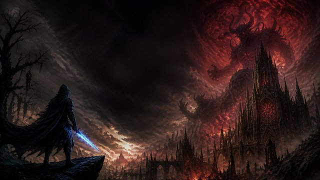
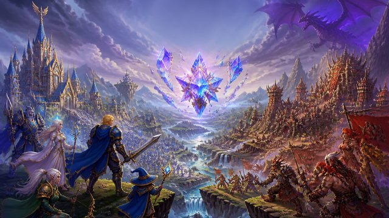
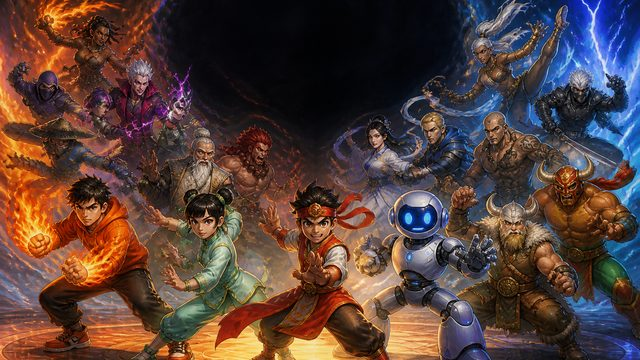
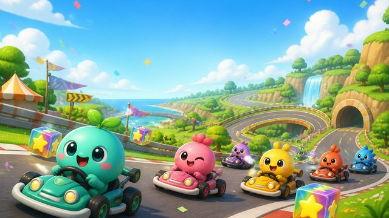
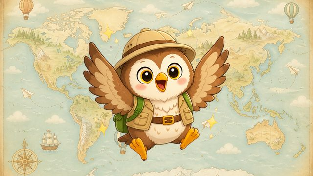

NEW燼淵：魂誓
Ashen Oath暗黑風動作角色扮演。四種族四職業，闖進隨機產生的三幕地牢，刷白藍黃橘四品質裝備與傳奇，擊敗三大魔王與噬魂之王摩洛斯。
動作角色扮演隨機地牢刷寶自動存檔
滑鼠左鍵移動與攻擊・右鍵與 1～5 技能・Q／E 藥水・T 回城（建議用電腦玩）
開始玩 ▶
用 Godot 遊戲引擎和 AI 一起做的原創小遊戲。選一個開始玩吧！

NEW暗黑風動作角色扮演。四種族四職業，闖進隨機產生的三幕地牢，刷白藍黃橘四品質裝備與傳奇，擊敗三大魔王與噬魂之王摩洛斯。

奇幻角色扮演冒險。選擇曙光聯盟或赤焰部族、六種族四職業，接任務練功，組隊挑戰地城與虛空龍團隊副本，到競技場和戰場為陣營爭光。

2D 對戰格鬥遊戲，20 位原創角色，單人闖關打到最後的暗影分身，也能兩人同樂。

3D 卡丁車競速，12 隻原創精靈、3 條賽道，甩尾集氣、7 種道具，大獎賽連跑 3 場拿獎盃。
雷電風格射擊遊戲。撿到道具要答對 20 以內的加減題才能升級武器，還有線上排行榜。
